Meet Vinayak Ramesh Kamat. He is the owner of Kamat Opticians. He has completed his diploma in Optometry. After completing his diploma, he has worked as an assistant to an eye specialist. During his job as an assistant, he gained deep knowledge about eye-related problems. Presently, he has been in this eye care industry for over 30 years now. With his experience, he can now diagnose any eye-related problem and can refer you to the respective eye specialist for your problem.
Kamat Opticians was started in the year 2002. And since then, we have received great reviews from our customers. It's been over 20 years now and we have continued to excel in our fields and satisfy our customers by providing them good quality products at cheaper rates. In Kamat Opticians, you can find different top-quality brands as well. Here, we do computerized eye checkups. For a customer to be comfortable with the eyewear, two factors should be considered. One proper eye checkup and two accurate measurements and fitting. Along with this, better after-sales services are also important. You can find all these factors at Kamat Opticians. For the last 20 years, we have satisfied almost all of our customers with our products and we ought to continue working with your support.
Image Gallery
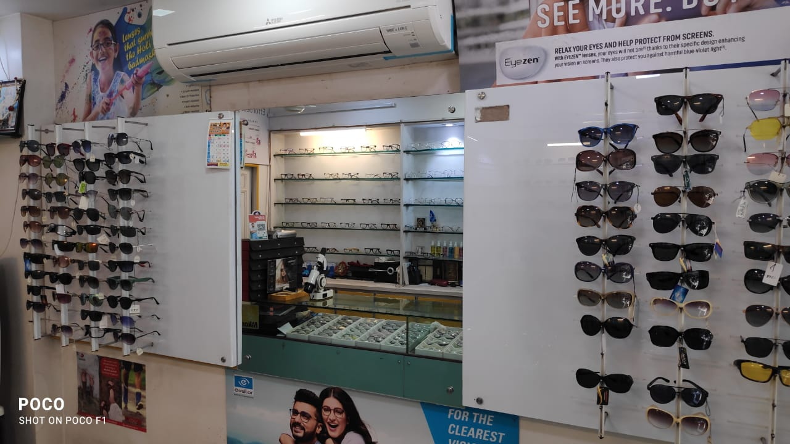
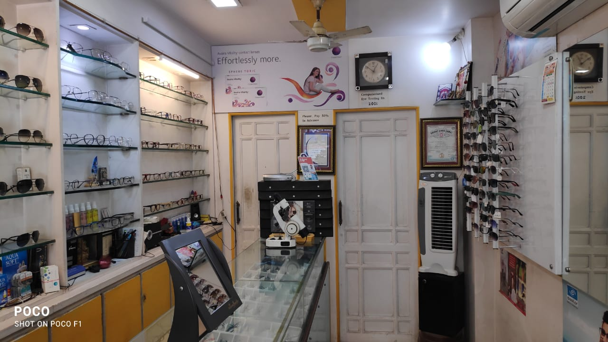
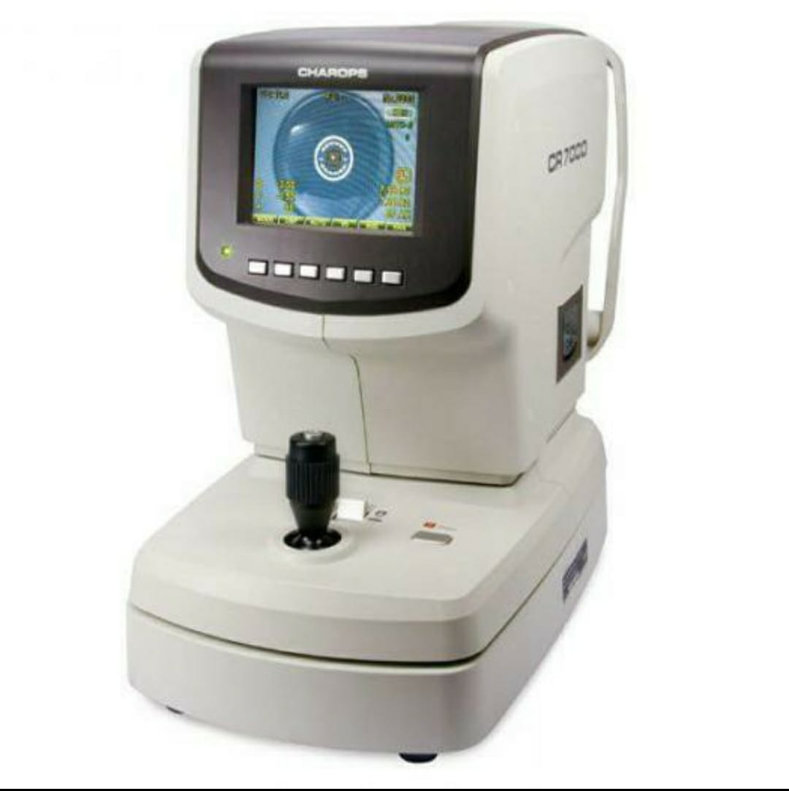
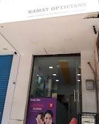
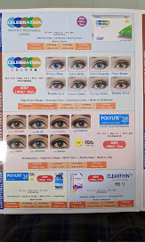
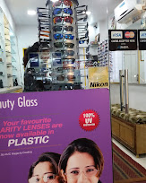
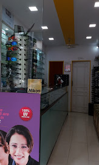
 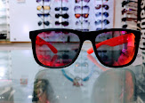
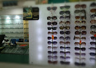
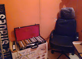
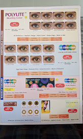
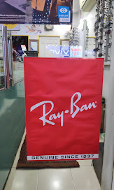
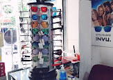
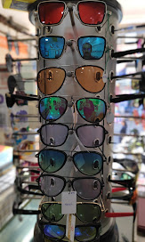
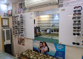
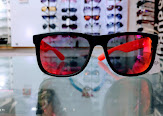
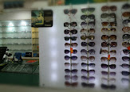
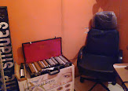
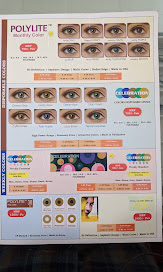
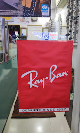
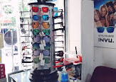
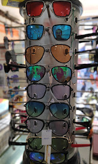
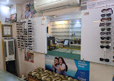
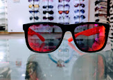
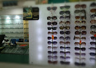
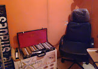
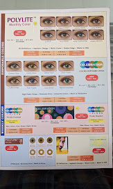
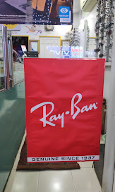
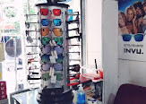
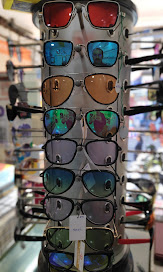
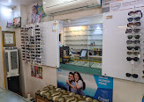